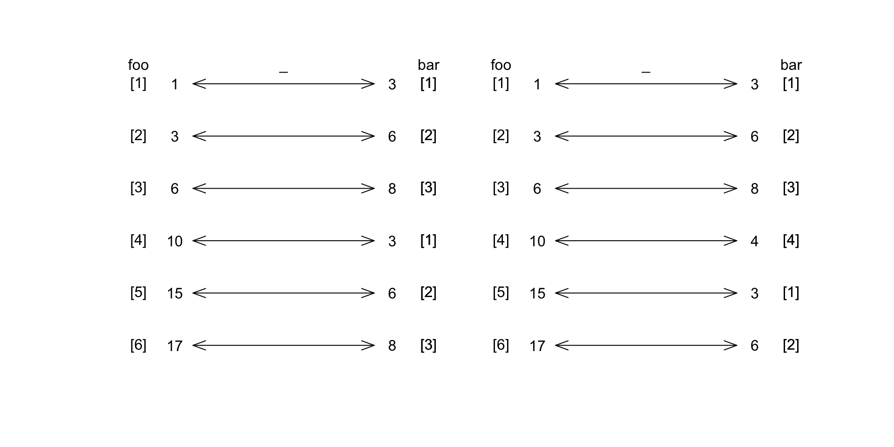

![]()
[1] 1 2 3 4 5[1] 6 7 8 9 10[1] 7 9 11 13 15Los vectores son muy útiles porque permiten a R realizar operaciones en múltiples elementos simultáneamente, con velocidad y eficiencia. Este comportamiento orientado a vectores, vectorizado o de elementos es una característica clave del lenguaje.
La operación suma de dos vectores se hace componente a componente
La operación resta de dos vectores se hace componente a componente
La operación producto de dos vectores se hace componente a componente
La operación cociente de dos vectores se hace componente a componente
Cuando los vectores no tienen la misma longitud, el vector más corto se replica hasta alcanzar la longitud del más largo. En caso de que la longitud del más largo no sea un múltiplo de la longitud del más corto manda un mensaje de advertencia.
Warning message in c(1, 3, 6, 10, 15, 17) + c(3, 6, 8, 10):
“longitud de objeto mayor no es múltiplo de la longitud de uno menor”x=rep(-1,length(foo))
plot(x,1:length(foo),axes=FALSE,ann=FALSE,type="p",col='white',xlim=c(-2,2))
arrows(x-0.5,length(foo):1,x+0.5,length(foo):1,code=3,angle=20,length = 0.15)
text(x-0.6,length(foo):1,labels=foo)
text(x-0.8,length(foo):1,labels=paste('[',1:length(foo),']',sep=''))
text(x+0.6,length(foo):1,labels=bar)
text(x+0.8,length(foo):1,labels=paste('[',1:length(bar),']',sep=''))
text(x+0.8,length(foo):1,labels=paste('[',1:length(bar),']',sep=''))
mtext("foo",side=3, at=-1-0.8)
mtext("bar",side=3, at=-1+0.8)
mtext("_",side=3, at=-1)
# cuando la longitud del más corto no es divisor de la long del mas largo
x=rep(1,length(foo))
bar<-c(3,6,8,4)
arrows(x-0.5,length(foo):1,x+0.5,length(foo):1,code=3,angle=20,length = 0.15)
text(x-0.6,length(foo):1,labels=foo)
text(x-0.8,length(foo):1,labels=paste('[',1:length(foo),']',sep=''))
text(x+0.6,length(foo):1,labels=bar)
text(x+0.8,length(foo):1,labels=paste('[',1:length(bar),']',sep=''))
text(x+0.8,length(foo):1,labels=paste('[',1:length(bar),']',sep=''))
mtext("foo",side=3, at=1-0.8)
mtext("bar",side=3, at=1+0.8)
mtext("_",side=3, at=1)
Importante
Un operador o una función actuará sobre cada elemento de un vector sin la necesidad de que usted escriba un bucle.
[1] 1.732051 2.236068 1.000000 2.645751 2.000000[1] 15[1] 20Todos los operadores aritméticos en R están vectorizados. Los siguientes ejemplos demuestran la resta, la multiplicación, la exponenciación y dos tipos de división, así como el residuo de la división:
[1] 0 1 3 5 9 11[1] 4 1 0 1 4 [1] 0.3333333 0.6666667 1.0000000 1.3333333 1.6666667 2.0000000 2.3333333
[8] 2.6666667 3.0000000 3.3333333 [1] 0 0 1 1 1 2 2 2 3 3 [1] 1 2 0 1 2 0 1 2 0 1Importante
¿Cuántos números del 1 al 10 son divisibles por 3?
Importante
¿Cuáles números del 1 al 10 son divisibles por 3?
Importante
Datos de personas, sexo y edad,
Practicar el cálculo de las funciones trigonométricas, exponencial, logaritmica, usando el concepto de vectorización.
Para determinar si dos valores enteros son iguales se usa == (no use = recuerde que es para asignar). Los operadores relacionales son:
== igual a, idéntico a!= distinto a, diferente a , no igual a> Mayor que>= Mayor o igual que< Menor que<= Menor o igual queTodos estos operadores son vectorizados, veamos algunos ejemplos.
[1] TRUE TRUE TRUE[1] "logical"El resultado de este operador es un vector lógico, es decir, un vector cuyas entradas son TRUE o FALSE , estudiaremos en detalle estos vectores más adelante.
Importante
Un grupo de estudiantes obtuvo las siguientes notas 3.5,4.1,2.0,3.0,1.5,4.5,3.9 escribir código R que me diga cuantos estudiantes tienen una nota mayor o igual que el promedio de nota del curso.
Importante
Un grupo de estudiantes obtuvo las notas que se encuentran en el vector nota y su sexo se encuentra en el vector sexo - Cuántas mujeres y cuantos hombres hay? - Cuál es la nota promedio de mujeres y hombres? - Escribir código R que me diga cuántos estudiantes tienen una nota mayor o igual que el promedio de nota del curso. - Escribir código R que me diga cuantos estudiantes mujeres (sexo=="F") tienen una nota mayor o igual que el promedio de nota de las mujeres.
Comparar no enteros usando == es problemático. Todos los números que hemos tratado hasta ahora son números de punto flotante (float). Eso significa que se almacenan en la forma \(a\times 2 ^ b\), para dos números \(a\) y \(b\). Dado que todo este formato debe almacenarse en 32 bits, el número resultante es solo una aproximación de lo que realmente se desea. Esto significa que los errores de redondeo a menudo se introducen en los cálculos y las respuestas esperadas pueden ser incorrectas.
Observe el siguiente ejemplo donde se compara \(\left (\sqrt 2\right)^2\) con 2, sabemos por matemáticas básicas que esa igualdad es cierta, sin embargo …
ese valor que es casi cero es el error de redondeo.
R también proporciona la función all.equal() para verificar la igualdad de números. Esta funcion proporciona un nivel de tolerancia (por defecto, alrededor de \(1.5\times 10^{-8}\)), de modo que se ignoran los errores de redondeo menores que la tolerancia:
all.equalSi los valores a comparar no son los mismos, all.equal devuelve un informe sobre las diferencias. Si necesita un valor VERDADERO o FALSO, debe incluir la llamada a all.equal en una llamada a isTRUE
También podemos usar == para comparar cadenas. En este caso, la comparación distingue entre mayúsculas y minúsculas, por lo que las cadenas deben coincidir exactamente. También es teóricamente posible comparar cadenas usando mayor o menor que (> y <):
Los nombres de las variables pueden contener letras, números, puntos y guiones bajos, pero no pueden comenzar con un número o un punto seguido de un número.
No se permiten palabras reservadas como if y for. En algunos lugares, se permiten letras que no sean ASCII, pero para la portabilidad del código es mejor ceñirse a la a a la z (y A a la Z). La página de ayuda ?make.names ofrece detalles precisos sobre lo que está permitido y lo que no.
Ahora podemos reutilizar estos valores en nuestros cálculos posteriores:
También podemos hacer asignaciones globales usando << -. Esto se usa en la programación de funciones para crear una variable disponible en cualquier lugar, lo cual estudiaremos más adelante.
Observe que cuando asigna una variable, no ve el valor que se le ha dado. Para ver qué valor contiene una variable, simplemente escriba su nombre en el símbolo del sistema
Si desea asignar un valor e imprimirlo todo en una línea, tiene dos posibilidades.
En primer lugar, puede poner varias declaraciones en una línea separándolas con un punto y coma (;) .
En segundo lugar, puede envolver la tarea entre paréntesis, (). En los siguientes ejemplos, rnorm genera números aleatorios a partir de una distribución normal y rlnorm genera ellos de una distribución lognormal
Para ayudar con la aritmética, R admite cuatro valores numéricos especiales: Inf, -Inf, NaN y NA
Inf infinito positivo
-Inf infinito negativo
NaN es la abreviatura de Not-a-Number “no es un número” y significa que nuestro cálculo no tenía sentido matemático o no se pudo realizar correctamente
NA es la abreviatura de Not Available “no disponible” y representa un valor perdido, un problema demasiado común en el análisis de datos.
En general, si nuestro cálculo implica un valor faltante, entonces también faltarán los resultados
Warning message in sqrt(-2):
“Se han producido NaNs”NAInf e -InfWarning message in sin(Inf):
“Se han producido NaNs”Warning message:
“Se han producido NaNs”NA y NaNCuando la aritmética involucra NA y NaN, la respuesta es uno de esos dos valores, pero cuál de esos dos depende del sistema:
Hay funciones disponibles para verificar estos valores especiales.
Observe que NaN y NA no son finitos ni infinitos, y falta NaN, pero NA es un número:
Además de los números, el cálculo científico a menudo involucra valores lógicos, particularmente como resultado del uso de operadores relacionales (<,>,==, etc.). Muchos lenguajes de programación usan lógica booleana, donde los valores pueden ser VERDADEROS o FALSOS. En R, la situación es un poco más complicada, ya que también podemos tener valores perdidos, NA.
TRUE y FALSE son palabras reservadas en R: no puede crear una variable con ninguno de esos nombres (aunque las versiones en minúsculas o en mayúsculas y minúsculas como True están bien). Cuando inicia R, las variables T y F ya están definidas para usted, tomando los valores TRUE y FALSE, respectivamente. Esto puede ahorrarle un poco de escritura, pero también puede causar grandes problemas. T y F no son palabras reservadas, por lo que los usuarios pueden redefinirlas.
Esto significa que está bien usar los nombres abreviados si está trabajando en la línea de comando, pero no si su código va a interactuar con el de otra persona
! se usa para la negación no (not)& se usa para la conjunción y (and).| se usa para la disyunción o (or).Considere el vector z anterior y escriba código que nos permita saber
whichLa función which recibe un vector lógico y regresa las posiciones donde se encuentran los valores lógicos TRUE
Saber donde se encuentran los numeros pares en un vector
Saber en qué posición está un número particular, por ejemplo saber la pocición de 9 en z
which.max y which.minEstudiaremos los operadores lógicos and (&), or (|) y la negación lógica not (!)
& [1] FALSE FALSE FALSE FALSE TRUE TRUE TRUE TRUE TRUE TRUE [1] FALSE TRUE FALSE TRUE FALSE TRUE FALSE TRUE FALSE TRUE [1] FALSE FALSE FALSE FALSE FALSE TRUE FALSE TRUE FALSE TRUE|| x | y | not.x | not.y | x_or_y | x_and_y |
|---|---|---|---|---|---|
| TRUE | TRUE | FALSE | FALSE | TRUE | TRUE |
| FALSE | TRUE | TRUE | FALSE | TRUE | FALSE |
| NA | TRUE | NA | FALSE | TRUE | NA |
| TRUE | FALSE | FALSE | TRUE | TRUE | FALSE |
| FALSE | FALSE | TRUE | TRUE | FALSE | FALSE |
| NA | FALSE | NA | TRUE | NA | FALSE |
| TRUE | NA | FALSE | NA | TRUE | NA |
| FALSE | NA | TRUE | NA | NA | FALSE |
| NA | NA | NA | NA | NA | NA |
Por defecto, cuando un vector tiene datos faltantes, R regresa NA
Ejemplo con la media
[1] 20 18 15 19 19 23 19any() y all()Otras dos funciones útiles para tratar con vectores lógicos son any() y all(), que devuelven TRUE si el vector de entrada contiene al menos un valor TRUE o solo valores TRUE, respectivamente:
[1] FALSE FALSE FALSE FALSE TRUE[1] TRUE[1] TRUE TRUE TRUE TRUE FALSE[1] FALSEa [1] TRUE FALSE FALSE FALSE TRUE FALSE FALSE TRUE FALSE TRUE TRUE FALSE
[13] FALSE FALSE FALSE[1] 5 [1] TRUE TRUE TRUE FALSE TRUE TRUE TRUE TRUE FALSE TRUE TRUE TRUE
[13] FALSE TRUE FALSE[1] 11 [1] TRUE FALSE TRUE TRUE TRUE TRUE FALSE TRUE TRUE TRUE TRUE TRUE
[13] TRUE FALSE TRUE[1] 12 [1] FALSE TRUE TRUE TRUE FALSE TRUE TRUE FALSE TRUE FALSE FALSE TRUE
[13] TRUE TRUE TRUE[1] 10